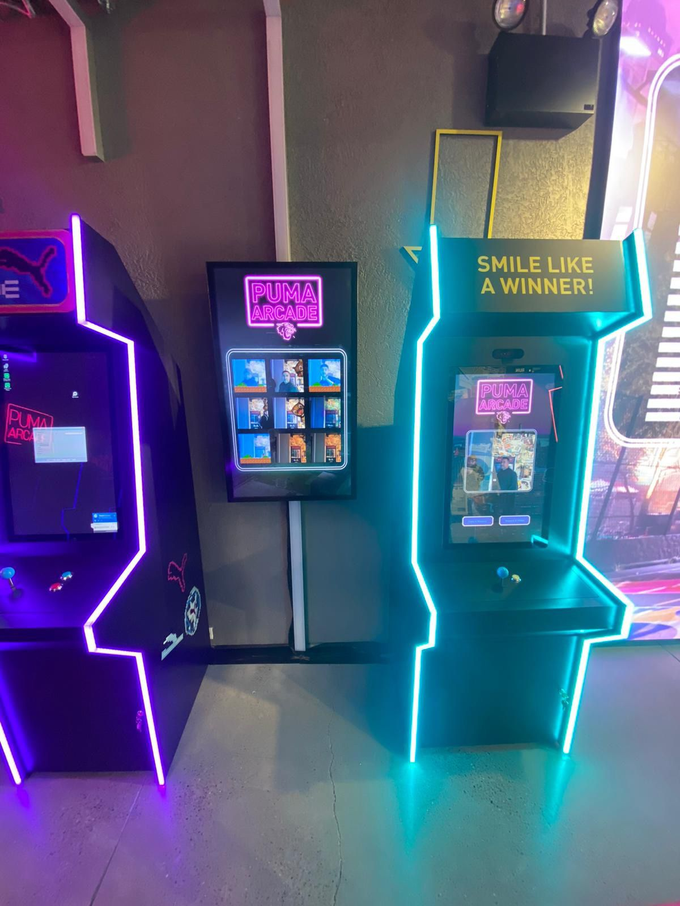
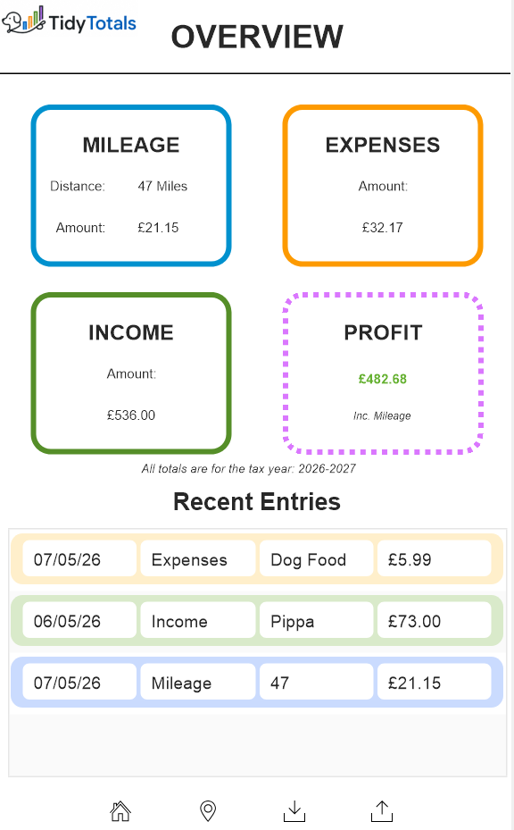

Realtime Applications
Interactive systems built with Unreal Engine, realtime communication layers, animation systems, and runtime monitoring.
Realtime Systems • Integrations • Interactive Software
I work on realtime applications, backend integrations, workflow tooling, and interactive systems using Unreal Engine, Python, PHP, FileMaker, and web technologies.
My work sits somewhere between software engineering, realtime systems, and technical problem solving.
Most of the projects I work on involve multiple moving parts: external services, realtime communication, workflow tooling, deployment constraints, or hardware interaction.
I enjoy building systems that are practical, maintainable, and stable under actual use rather than just looking good in demos.
Interactive systems built with Unreal Engine, realtime communication layers, animation systems, and runtime monitoring.
API integrations, backend services, synchronization workflows, and bridging legacy systems with web infrastructure.
Automation tooling, business systems, database-driven applications, and reducing operational friction.

Realtime retail installation deployed in the PUMA NYC flagship store. Built with Touchdesigner, Python services, and WebSocket-based monitoring.

Database-driven finance tracking system focused on workflow speed, organization, and reducing spreadsheet overhead.

Integration layer for moving data between internal systems and web services with validation and retry handling.